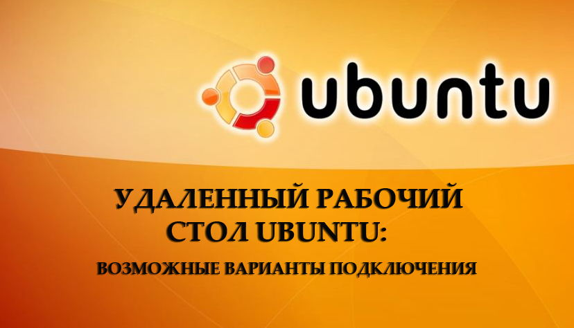
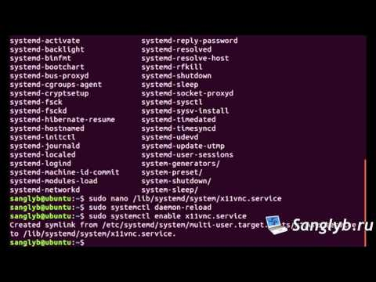
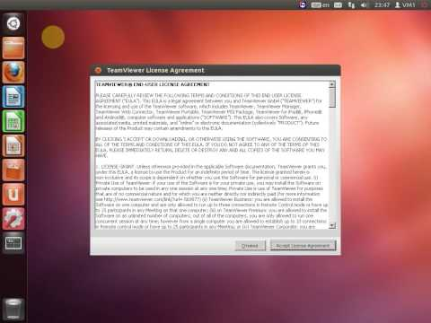

|
|
+7 (495) 921-11-88 ГлавнаяОперационные системыLinux Удалённый рабочий стол Ubuntu: возможные варианты подключения Современные компьютерные технологии позволяют получать доступ к своему компьютеру из любой точки земного шара практически с любого устройства. Эта функция получила название удалённого доступа. Она очень сильно может выручить в том случае, если в нерабочее время вы нуждаетесь в данных, хранящихся на рабочих компьютерах, либо же вам нужно помочь своим друзьям или знакомым настроить что-то на их оборудовании без необходимости личного присутствия. Некоторые же пользователи во время отпуска желают получить доступ к фильмотеке или любым другим файлам, хранящимися на домашнем компьютере.  Организовать такой доступ совершенно не сложно, всё что вам нужно — это несколько минут времени для настройки, а затем интернет для непосредственной организации доступа. Операционная система Ubuntu имеет простой, но в тоже время удобный встроенный функционал. Если вам не нужны какие-то продвинутые функции, а возможностей стандартных инструментов будет вполне достаточно, вы даже сможете обойтись без дополнительного программного обеспечения. В этой статье мы предлагаем рассмотреть несколько вариантов, как организовать подключение к удалённому рабочему столу в Ubuntu. Мы познакомимся с несколькими возможными протоколами, через которые можно совершать сеанс связи, а также проведём небольшой обзор стороннего программного обеспечения. Самым популярным вариантом является использование протокола VNC. Несмотря на то что он является устаревшим, небезопасным, нестабильным и медленным, он поддерживается практически любым оборудованием и операционной системой, так что, проблем с совместимостью быть практически не должно. Примечательно, что все необходимые утилиты, чтобы создать удалённый доступ к рабочему столу, уже вшиты в дистрибутив Ubuntu. Вам остаётся лишь активировать их и правильно настроить. Итак, рассмотрим ваши действия шаг за шагом.
Теперь, когда вы настроили удалённый рабочий стол Ubuntu, можно попробовать подсоединиться к нему с любого другого компьютера. Но из-за того, что по умолчанию активировано шифрование соединения, могут возникнуть проблемы при использовании других операционных систем. Чтобы избежать этого, принудительно отключите его. Для этого:
Мы разобрали ситуацию, когда оба компьютера работают под управлением Ubuntu. По такому же принципу можно пользоваться любой другой программой для удалённого управления компьютером на любой операционной системе, включая Windows, Mac OS или даже Android. Всё что нужно — знать адрес и пароль подключения.  Клиент TeamViewer Большинство пользователей найдёт для себя наиболее удобным вариантом использовать клиент TeamViewer. По большому счёту, разработчики программного продукта задали чуть ли не стандарт удалённого управления компьютерами. Примечательно, что для некоммерческих целей утилита является совершенно бесплатной. Всё что вам нужно — это скачать и установить программу на оба компьютера, а все настройки будут подобраны автоматически. В этом материале мы расскажем лишь о самых основных возможностях и о том, как быстро установить и запустить программу. Более детально о её возможностях рассказывает вот это статья. Итак, приступим.
Cd ~/Загрузки/ Sudodpkg –add-architecture i386 Apt-get update Sudodpkg -iteamviewer* Apt-get -f install СОВЕТ. Если вы загрузили файл в другую папку, стоит указать именно её.
Примечательно, что, если вы планируете управлять некоторыми компьютерами на регулярной основе, вы сможете избежать постоянного ввода их идентификаторов после процедуры регистрации.
 Заключение Как видите, удалённое подключение к Ubuntu не является чем-то очень сложным. На самом деле, всё довольно просто. Если вы не хотите пользоваться дополнительным программным обеспечением, воспользуйтесь встроенным функционалом и организовывайте управление по протоколу VNC. Из сторонних разработок наверняка лучшим вариантом будет использовать TeamViewer. Кстати, об этой программе у нас есть отдельная статья. В комментариях просим вас рассказать, какой вариант удалённого управления Ubuntu вы выбрали. |